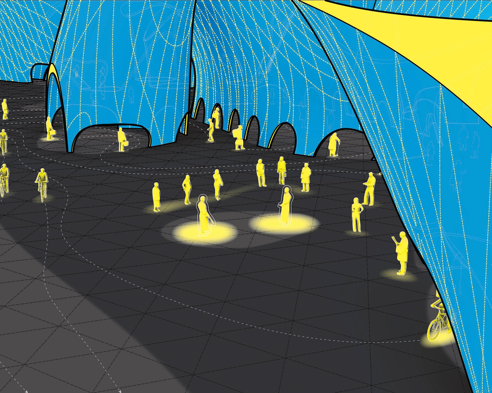

Spatial Membrane
Fall 2025A continuous surface starting from a flat rectangle that creates space as it bends and twists. The form of the surface is represented through a variety of methods.




A continuous surface starting from a flat rectangle that creates space as it bends and twists. The form of the surface is represented through a variety of methods.
